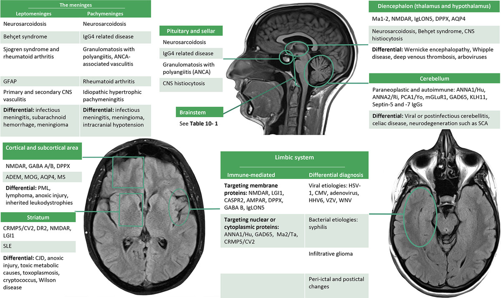

Autoimmune Encephalitis
1 Initial Work-up
- Order MRI brain with contrast
- CSF: basic studies, OCB, cytokine panel, flow cytometry, cytology, infectious PCR
- If suspicious for HSV → send two tests and treat empirically with acyclovir until both tests are negative
2 Does it meet Graus criteria for autoimmune encephalitis?
Subacute onset (< 3 months) of memory deficits, altered mental status, or psychiatric symptoms
One or more of the following:
New focal CNS deficits
Unexplained seizures
CSF pleocytosis
MRI findings suggestive of encephalitis
AND Reasonable exclusion of alternative disorders
3 Serum or CSF?
Short answer: both.
3.1 Which panel to choose?
- When in doubt, order MDC2 and MDS2 — these are the most complete panels.
They contain the same antibodies as ENS2/ENC2 plus Kelch-11.
(Kelch-11 often presents as a brainstem syndrome but can also cause limbic encephalitis, so it is best to send all antibodies.)
Is that enough? NO.
- Ma2 can present with limbic encephalitis and is not on any panel. It must be ordered separately (Mayo, Quest, or Athena).
- MOGAD can present as ADEM, cortical encephalitis, or undifferentiated meningoencephalitis and is not included in MDC2/MDS2 or ENC2/ENS2.
→ Always add CDS1 (to test for MOG-IgG).
3.2 If diencephalic, brainstem, or cerebellar syndrome
Order:
- MDC2 / MDS2
- CDS1
- Ma2 (must be ordered separately)
ENC2 / ENS2 alone is not enough for these syndromes.
You must order MDS2/MDC2; otherwise you will miss many antibodies not tested on the encephalopathy panel.
See the Mayo anatomical map in the team rooms to guide which antibodies cause different syndromes.
4 Things to Know About Antibodies
GAD65 — very commonly false positive.
Must be > 20 nmol/L to be clinically significant.
Values 0.03 – < 20 nmol/L are false positive.
(If reported in IU, the significant threshold is 10 000.)Low-titer MOGAD (1:20 – 1:40) that does not meet Banwell criteria is usually a false positive.
If it looks like MS → it is MS.NMDA+ in serum but negative in CSF → rethink whether the patient truly has the syndrome.
4.1 Preferred specimen by antibody
| Better in Serum | Better in CSF |
|---|---|
| AQP4, MOG, CASPR2, LGI-1, Myasthenia Abs | NMDA, GFAP |
5 Treatment of Autoimmune Encephalitis
If high suspicion (meets criteria):
- Treat with IVMP + PLEX
- Give rituximab 1 g once after PLEX
- Obtain CT CAP + testicular / ovarian ultrasound
6 Quick Antibody Associations
- NMDA & AMPA → psychiatric symptoms + limbic encephalitis
- PCA-1 / Anti-Yo → cerebellar degeneration + ovarian cancer
- LGI-1 → faciobrachial dystonic seizures / hyponatremia
- LGI-1 / CASPR2 / GABAb → seizures (usually temporal lobe), rapidly progressive dementia
- GAD65 → refractory epilepsy, cerebellar ataxia, autoimmune encephalitis, stiff-person syndrome
- ANNA-1 / Anti-Hu → can cause almost anything, including a neuronopathy with complete sensory loss
7 Neurosarcoidosis
Can present as:
- Parenchymal lesions
- Leptomeningitis / pachymeningitis
- “Meningioma-like” lesions
- Diencephalic presentation
- Pituitary / sellar involvement
- Myelitis (trident sign, pial enhancement)
Work-up / Treatment
- Get CT CAP
- Obtain tissue for biopsy if possible
- After biopsy (or empirically if high suspicion): IVMP 1 g × 3–5 days (or oral equivalent) + prolonged steroid taper
- If diagnosis is confirmed while inpatient → consider starting infliximab
